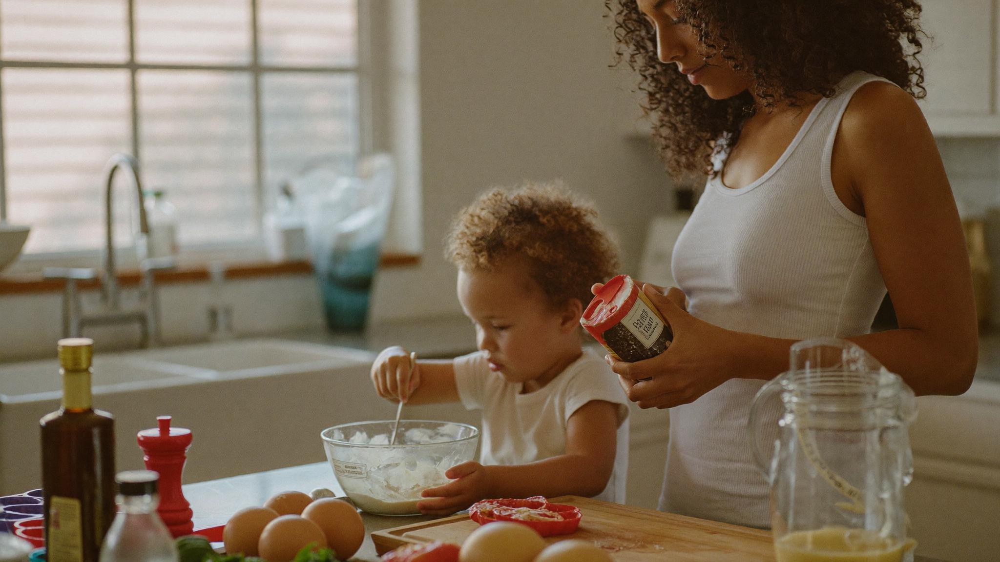

Road-Trip & Kitchen Math: Everyday Ways to Teach Numbers
By Leslie Dykstra · Certified Early Childhood Specialist · Williamson County, TN

Happy Fourth of July! If your family is road-tripping, cooking out, or waiting for fireworks today, there's more math happening around you than you might notice. Everyday math activities for kids don't need worksheets or flashcards. They need a curious adult who points at the world and says, "How many do you think?"
As a certified early childhood specialist, I believe the most lasting number sense gets built in real life. Not from a screen or a drill sheet — from measuring, counting, sorting, and comparing the actual things in front of a child.
Why does everyday math matter so much?
Early number sense is not just about memorizing counting order. It's about understanding what numbers mean. A child who knows that five blueberries is more than three, that you need two more to make five, or that the watermelon slices can be split evenly — that child has number sense. That understanding is what makes formal math feel logical rather than mysterious when they get to school.
Children who arrive at kindergarten with strong number sense find early math much less frightening. And most of it can be built right now, in the kitchen and on the road, without any special materials.
For a fuller picture of what math readiness looks like before kindergarten, see early math skills before kindergarten.
Kitchen math activities for July 4th cooking
The cookout is one of the best classrooms there is. Here's how to bring math into it naturally:
- Count as you cook. "We need eight hot dog buns. Let's count them out together." One-to-one correspondence — matching a number to each object — is the foundation of early arithmetic.
- Measure the lemonade. Pour water into a measuring cup together. Talk about the numbers on the side. Half, full, more, less — these concepts grow from touching and pouring, not from a page.
- Sort the toppings. Set out ketchup, mustard, relish, and onions. Ask your child to put all the red things together, then the yellow things. Sorting and classifying is where mathematical thinking begins.
- Compare the watermelon slices. Which slice is bigger? How do you know? Can you find two that look the same size? Comparison is a core math skill that children can practice well before they know any formal numbers.
- Set the table. Count out napkins, plates, and forks — one for each person. That matching is real one-to-one correspondence, and it matters.
Road-trip math for the drive to grandma's
Long drives are one of my favorite opportunities for quick math conversations. No supplies needed.
Counting games:
- Count how many red cars you pass before the next exit.
- Count telephone poles. Stop at ten and start again.
- Count to fifty by fives if your child is ready — clap on each number.
Pattern spotting:
- Look for patterns on road signs (square, circle, diamond — the shapes mean things). Ask: "What shape is a stop sign?" "How many sides does it have?"
- Mile markers count up. "We just passed 47. What number do you think comes next?"
Estimation:
- "How many gas stations do you think we'll pass before we get there?" Estimation, even wild-guess estimation, is a real mathematical habit of mind.
Comparing numbers:
- "The speed limit is 65. The sign back there said 55. Which is more?" Simple comparisons with real numbers from the environment build number sense quietly.
What if my child isn't interested in math games?
This happens. A few things that help:
Keep it short. Two or three questions, then let it go. You don't need to turn every moment into a lesson. One good question asked naturally is worth more than a forced ten-minute session.
Follow what they notice. If they're fascinated by the fireworks, count the seconds between the flash and the boom. If they love watermelon seeds, count those. Interest is the strongest learning motivator there is.
And if you notice that your child struggles with basic number concepts — counting past ten, understanding more and less, recognizing small quantities — it's worth having a conversation. A personalized assessment can show you exactly where the gaps are and what to work on next.
Frequently asked questions
When should my child know their numbers to 20?
Most children can count to 20 by age five, but counting sequence and true number understanding develop at different speeds. If your child can count to 20 but doesn't understand that 15 is more than 12, that's worth addressing. The Kindergarten Readiness Checklist covers this and much more.
Is it okay to use food as a math manipulative?
Absolutely. Cheerios, grapes, crackers — concrete objects are some of the best early math tools. Children learn number concepts far better through touching and moving real items than through abstract symbols on a page.
My child says they hate math. Is it too late to change that?
It's almost never too late, especially before age eight. Often what a child actually dislikes is the feeling of being confused. When math connects to something real they care about, the whole relationship can shift.
Want a simple plan for summer math?
Whether your child is getting ready for kindergarten or heading into early elementary, there's a program designed for where they are right now. Explore programs at Little Minds, Big Futures or book a free 15-minute conversation with Leslie. Where every child's potential takes flight.